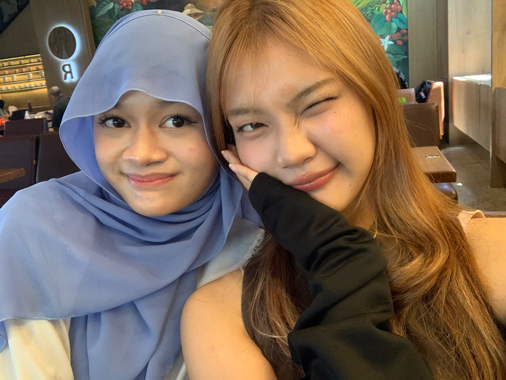

And up until now, we’re still friends for good anyways. Makasih ya udah bantu gw menyadarkan beberapa hal dari segala aspek kehidupan, mengajarkan gw banyak hal, dan memberikan yang terbaik dengan versi diri lu sendiri.
Makasih udah jadi orang paling keren. Semoga bisa bersinar di kampus lu, jadi talentnya mereka, mengharumkan nama UBSI menjadi kampus yang semakin dikenal orang (aamiin), biar ngga dibayar jadi mahasewa sama raffi ahmad anjg emang cok. Marahin aja tu orang.
Oh iya maap y terbalut emosi jadinya. Intinya, makin sukses dan happy selalu ya. Afirmasi positif terhadap diri sendiri, rasa percaya diri lu yang bagus adalah salah satu yang gw admire dari lu. Tengs udh mw berteman dgn gw. Happy birthday, Kayla Amanda. Barakallah fii umriik.